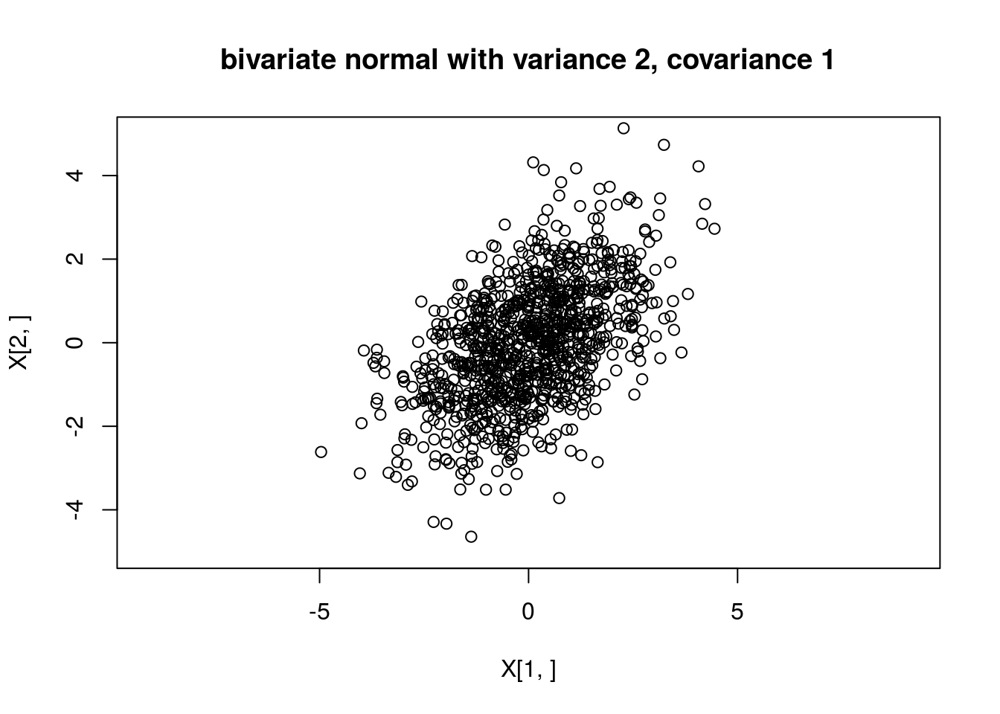
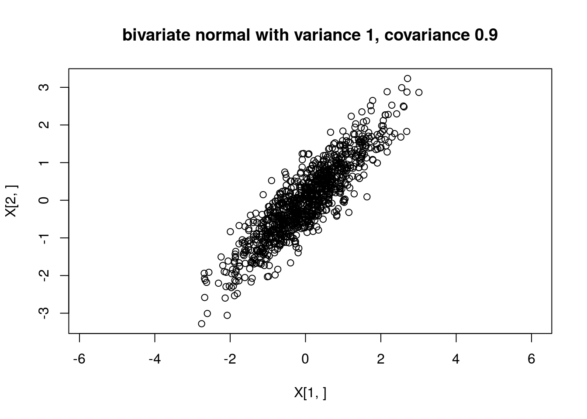

Last updated: 2021-02-28
Checks: 7 0
Knit directory: fiveMinuteStats/analysis/
This reproducible R Markdown analysis was created with workflowr (version 1.6.2). The Checks tab describes the reproducibility checks that were applied when the results were created. The Past versions tab lists the development history.
Great! Since the R Markdown file has been committed to the Git repository, you know the exact version of the code that produced these results.
Great job! The global environment was empty. Objects defined in the global environment can affect the analysis in your R Markdown file in unknown ways. For reproduciblity it’s best to always run the code in an empty environment.
The command set.seed(12345) was run prior to running the code in the R Markdown file. Setting a seed ensures that any results that rely on randomness, e.g. subsampling or permutations, are reproducible.
Great job! Recording the operating system, R version, and package versions is critical for reproducibility.
Nice! There were no cached chunks for this analysis, so you can be confident that you successfully produced the results during this run.
Great job! Using relative paths to the files within your workflowr project makes it easier to run your code on other machines.
Great! You are using Git for version control. Tracking code development and connecting the code version to the results is critical for reproducibility.
The results in this page were generated with repository version 578bfb0. See the Past versions tab to see a history of the changes made to the R Markdown and HTML files.
Note that you need to be careful to ensure that all relevant files for the analysis have been committed to Git prior to generating the results (you can use wflow_publish or wflow_git_commit). workflowr only checks the R Markdown file, but you know if there are other scripts or data files that it depends on. Below is the status of the Git repository when the results were generated:
Ignored files:
Ignored: .Rhistory
Ignored: .Rproj.user/
Ignored: analysis/.Rhistory
Ignored: analysis/bernoulli_poisson_process_cache/
Untracked files:
Untracked: _workflowr.yml
Untracked: analysis/CI.Rmd
Untracked: analysis/gibbs_structure.Rmd
Untracked: analysis/libs/
Untracked: analysis/results.Rmd
Untracked: analysis/shiny/tester/
Unstaged changes:
Modified: analysis/LR_and_BF.Rmd
Modified: analysis/MH-examples1.Rmd
Modified: analysis/MH_intro.Rmd
Deleted: analysis/r_simplemix_extended.Rmd
Note that any generated files, e.g. HTML, png, CSS, etc., are not included in this status report because it is ok for generated content to have uncommitted changes.
These are the previous versions of the repository in which changes were made to the R Markdown (analysis/mvnorm.Rmd) and HTML (docs/mvnorm.html) files. If you’ve configured a remote Git repository (see ?wflow_git_remote), click on the hyperlinks in the table below to view the files as they were in that past version.
| File | Version | Author | Date | Message |
|---|---|---|---|---|
| Rmd | 578bfb0 | Matthew Stephens | 2021-02-28 | workflowr::wflow_publish(“analysis/mvnorm.Rmd”) |
| html | 5f62ee6 | Matthew Stephens | 2019-03-31 | Build site. |
| Rmd | 0cd28bd | Matthew Stephens | 2019-03-31 | workflowr::wflow_publish(all = TRUE) |
| html | 34bcc51 | John Blischak | 2017-03-06 | Build site. |
| Rmd | 5fbc8b5 | John Blischak | 2017-03-06 | Update workflowr project with wflow_update (version 0.4.0). |
| Rmd | 391ba3c | John Blischak | 2017-03-06 | Remove front and end matter of non-standard templates. |
| html | 8e61683 | Marcus Davy | 2017-03-03 | rendered html using wflow_build(all=TRUE) |
| html | 5d0fa13 | Marcus Davy | 2017-03-02 | wflow_build() rendered html files |
| Rmd | d674141 | Marcus Davy | 2017-02-26 | typos, refs |
| html | c3b365a | John Blischak | 2017-01-02 | Build site. |
| Rmd | 67a8575 | John Blischak | 2017-01-02 | Use external chunk to set knitr chunk options. |
| Rmd | 5ec12c7 | John Blischak | 2017-01-02 | Use session-info chunk. |
| Rmd | be2da01 | stephens999 | 2016-02-15 | add multivariate normal |
You need to know what a univariate normal distribution is, and basic properties such as the fact that linear combinations of normals are also normal. You also need to know the basics of matrix algebra (e.g. matrix multiplication, matrix transpose).
There are several equivalent ways to define a multivariate normal, but perhaps the most succinct and elegant is this one, which I took from Wikipedia: “a random vector is said to be \(r\)-variate normally distributed if every linear combination of its \(r\) components has a univariate normal distribution”. The special case \(r=2\) is usually referred to as the “bivariate normal” distribution. And the terminology “\(r\)-dimensional multivariate normal” means the same as \(r\)-variate normal.
Perhaps more insight can be obtained by specifying one way to simulate from a multivariate normal distribution. Suppose \(Z_1,\dots,Z_n\) are independent random variables each with a standard normal distribution \(N(0,1)\). Let \(Z\) denote the vector \((Z_1,\dots,Z_n)\), and let \(A\) be any \(r \times n\) matrix, and \(\mu\) be any \(r\)-vector. Then the vector \(X = AZ+\mu\) has an \(r\)-dimensional multivariate normal distribution with mean \(\mu\) and variance-covariance matrix \(\Sigma:=AA'\). (Here \(A'\) means the transpose of the matrix \(A\).) We write \(X \sim N_r(\mu,\Sigma)\).
Note that \(E(X_j)=\mu_j\) and \(cov(X_i,X_j)= \Sigma_{ij}\).
When we simulate \(X\) this way, any linear combination of the elements of \(X\) is a linear combination of \(Z\), and so is univariate normal because any linear combination of univariate normals is univariate normal. That is, when we simulate \(X\) this way it satisfies the definition above for being \(r\)-variate normal.
Suppose we define \(X_1 = Z_1 + Z_2\) and \(X_2 = Z_1 + Z_3\) where \(Z_1,Z_2\) and \(Z_3\) are independent standard normal variables. Then \(X = AZ\) where \(A = \begin{pmatrix} 1 & 1 & 0 \\ 1 & 0 & 1 \end{pmatrix}\), and so \(X \sim N_2 (0,\Sigma)\) where \(\Sigma = AA' = \begin{pmatrix} 2 & 1 \\ 1 & 2 \end{pmatrix}\).
Here is some code to simulate from this distribution:
Z = rnorm(3)
A = rbind(c(1,1,0),c(1,0,1))
print(A %*% t(A)) # show Sigma [,1] [,2]
[1,] 2 1
[2,] 1 2X = A %*% ZAnd if we want to simulate lots of examples, we can do this lots of times. The following code simulates from this distribution 1000 times and plots the points.
X = matrix(0,nrow=2,ncol=1000)
A = rbind(c(1,1,0),c(1,0,1))
for(i in 1:1000){
Z = rnorm(3)
X[,i] = A %*% Z
}
plot(X[1,],X[2,],main="bivariate normal with variance 2, covariance 1",asp=1,xlim=c(-5,5),ylim=c(-5,5))
And we can check the sample covariances are close to the theoretical values:
cov(t(X)) [,1] [,2]
[1,] 1.844647 0.898902
[2,] 0.898902 1.915543From the above we can see that you can simulate from a multivariate normal with any mean \(\mu\) and variance covariance matrix \(\Sigma\) provided that \(\Sigma\) can be written as \(\Sigma = AA'\) for some matrix \(A\). This turns out to be possible if and only if \(\Sigma\) is what is known as a “Positive semi-definite” matrix - that is a symmetric matrix with non-negative eigenvalues.
Given a positive semi-definite matrix \(\Sigma\) there are multiple ways to find a matrix \(A\) such that \(\Sigma=AA'\) (and indeed multiple matrices \(A\) that obey this). However, for our purposes here we only need one way, and here we use the “Cholesky decomposition”, which finds a unique lower triangular matrix \(L\) such that \(LL' = \Sigma\). Here’s an illustration of the Cholesky decomposition (the R function chol() finds an upper triangular matrix, so we transpose it here to make it lower triangular).
Sigma = rbind(c(2,1),c(1,2))
L = t(chol(Sigma))
L [,1] [,2]
[1,] 1.4142136 0.000000
[2,] 0.7071068 1.224745L %*% t(L) [,1] [,2]
[1,] 2 1
[2,] 1 2We can use this to generate a multivariate normal. Here we use it to generate a bivariate normal with covariance matrix \[\begin{pmatrix} 1.0 & 0.9 \\ 0.9 & 1.0 \end{pmatrix}\]
my_rmvnorm=function(mu,Sigma){
r = length(mu)
L = t(chol(Sigma))
Z = rnorm(r)
return(L %*% Z + mu)
}
X = matrix(0,nrow=2,ncol=1000)
for(i in 1:1000){
X[,i] = my_rmvnorm(c(0,0),rbind(c(1.0, 0.9),c(0.9,1.0)))
}
plot(X[1,],X[2,],main="bivariate normal with variance 1, covariance 0.9",asp=1)
NOTE: If you want to actually generate multivariate normal random variables in R you should use a more carefully-written function like ‘’mvtnorm::rmvnorm’’.
sessionInfo()R version 3.6.0 (2019-04-26)
Platform: x86_64-apple-darwin15.6.0 (64-bit)
Running under: macOS 10.16
Matrix products: default
BLAS: /Library/Frameworks/R.framework/Versions/3.6/Resources/lib/libRblas.0.dylib
LAPACK: /Library/Frameworks/R.framework/Versions/3.6/Resources/lib/libRlapack.dylib
locale:
[1] en_US.UTF-8/en_US.UTF-8/en_US.UTF-8/C/en_US.UTF-8/en_US.UTF-8
attached base packages:
[1] stats graphics grDevices utils datasets methods base
loaded via a namespace (and not attached):
[1] Rcpp_1.0.6 rstudioapi_0.11 whisker_0.4 knitr_1.29
[5] magrittr_1.5 workflowr_1.6.2 R6_2.4.1 rlang_0.4.8
[9] stringr_1.4.0 tools_3.6.0 xfun_0.16 git2r_0.27.1
[13] htmltools_0.5.0 ellipsis_0.3.1 yaml_2.2.1 digest_0.6.27
[17] rprojroot_1.3-2 tibble_3.0.4 lifecycle_0.2.0 crayon_1.3.4
[21] later_1.1.0.1 vctrs_0.3.4 fs_1.5.0 promises_1.1.1
[25] glue_1.4.2 evaluate_0.14 rmarkdown_2.3 stringi_1.4.6
[29] compiler_3.6.0 pillar_1.4.6 backports_1.1.10 httpuv_1.5.4
[33] pkgconfig_2.0.3 This site was created with R Markdown